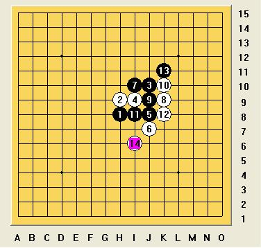

【茗弈】授课内容之（二）实战对局分析
首页
茗弈阁
#1 【茗弈】授课内容之（二）实战对局分析 作者：慎独 发表时间：2009-7-2 2:53:12
规则：RIF规则
时间规则：每方60分钟，不读秒
对手：pengpeng
开局情况：我开局，疏星开局，不交换，5A=I10（我执黑）
通过这一盘，大家可以欣赏一下，以pengpeng为代表的顶尖女棋手的实力
:怎样通过一个小小的局部，无限放大，一直到杀
:我仗着3/*760*90，创建于2012-2-9*/ var cpro_id = 'u761865';
#2 Re:【茗弈】授课内容之（二）实战对局分析 作者：安娜制作所 发表时间：2009-7-2 8:34:10
哈哈,抢到沙发了!
［ 茗弈小刀 于 2009-7-2 9:53:13 时花20金币送鲜花一朵］
#3 Re:【茗弈】授课内容之（二）实战对局分析 作者：茗弈小刀 发表时间：2009-7-2 9:54:07
顶一个！ 沙发没坐到就坐地上吧，凉快！
#4 Re:【茗弈】授课内容之（二）实战对局分析 作者：茗弈妙手 发表时间：2009-7-2 10:38:12
感谢小刀师父的备份以及慎独老师的整理！有几点要说的：
1、这盘棋的讲课平台是Q游三手区，因此有些字眼打不出来，只能用*显示，给大家阅读上造成了不便，请大家谅解（文中有些明显的错别字，其原因就是为了避免被屏蔽，如“充四”）；
2、严格意义上，57手（及之后）并非原谱，不过差别并不大；
3、一个更小的问题：我的iwzq官方名字和师父的风格一样，不带方括号
就这些，再次感谢师父与慎独！
［ 茗弈小刀 于 2009-7-2 11:30:56 时奖励此帖[金币加 20 威望加1］
#5 Re:【茗弈】授课内容之（二）实战对局分析 作者：茗弈小刀 发表时间：2009-7-2 11:33:47
妙手老师客气了，那么辛勤的为大家讲课传授知识，不收取一点回报。在这里我代表家族所有成员对你表达最诚挚的谢意！ ［ 慎独 于 2009-7-2 20:09:12 时花20金币送鲜花一朵］
#6 Re:【茗弈】授课内容之（二）实战对局分析 作者：茗弈宽容 发表时间：2009-7-2 19:50:47
谢谢妙手老师教我们这么多。
#7 Re:【茗弈】授课内容之（二）实战对局分析 作者：梦醉南天 发表时间：2009-7-3 17:13:00
一直为当时没参加听课而遗憾，呵呵，受益非浅，谢谢师兄
#8 Re:【茗弈】授课内容之（二）实战对局分析 作者：修远求索 发表时间：2009-7-3 20:41:03
谢谢
#9 Re:【茗弈】授课内容之（二）实战对局分析 作者：吃大米饭的鱼 发表时间：2009-7-6 12:18:49
妙手老师，慎独老师，小刀姐姐都是很好的师傅，谢谢你们。